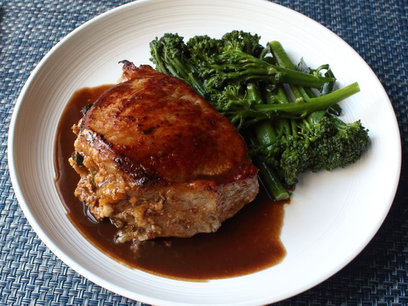

Home
Peach-Stuffed Pork Chops

The pork is one of the loved meat of our visitor , this recipe has a sweet toch that makes adict after the first bite
Ingredients
Stuffing:
- 2 strips bacon, sliced into ¼-inch pieces
- ½ cup diced onion
- 2 tablespoons diced poblano pepper
- 1 large yellow peach, peeled, pitted, and diced
- 8 saltine crackers, crushed
- 2 teaspoons fresh thyme leaves
- ¼ teaspoon freshly ground black pepper
- ¼ teaspoon kosher salt
- 1 pinch cayenne pepper
- 2 tablespoons chicken broth, or as needed (Optional)
Pork Chops:
- 2 double-cut boneless pork chops
- salt to taste
- 1 tablespoon olive oil
- ¼ cup chicken broth (Optional)
- 2 tablespoons balsamic vinegar
- 2 tablespoons salted butter, cold
Steps
- Preheat the oven to 400 degrees F (200 degrees C) with oven rack in center position.
- Cook bacon in a nonstick skillet over medium heat until almost crisp, about 5 minutes. Add onion and poblano pepper; cook until onion turns translucent, 5 to 6 minutes. Add peach; cook until tender and starting to render some juice. Transfer to a bowl.
- Stir saltines, thyme, black pepper, ¼ teaspoon salt, and cayenne pepper into peach mixture; add 2 tablespoons chicken broth to moisten as needed. Refrigerate until ready to use.
- Lay pork chops flat onto your work surface. Cut a pocket in center of each pork chop, starting with a small incision on fat side of chops, exactly halfway down, using the tip of a knife to cut as close to the edges as possible without poking through. Try to make pocket incisions at least 2 inches wide.
- Fill pockets with peach stuffing, packing and pressing in firmly; season both sides chops with salt.
- Heat olive oil in an oven-safe skillet over high heat. Add chops; sear until browned on one side, about 3 minutes. Carefully flip chops and transfer skillet to the oven.
- Bake in the preheated oven until an instant-read thermometer inserted into centers reads 145 degrees F to 150 degrees F (63 to 66 degrees C), about 15 minutes.
- Transfer chops to a plate; cover loosely with aluminum foil.
- Return the skillet to the stovetop; place a towel over the hot handle. Add ¼ cup chicken broth and balsamic vinegar; bring to a boil while scraping the browned bits of food off the bottom of the skillet with a wooden spoon. Off heat, stir in butter. Taste; adjust seasoning if desired. Serve sauce over pork chops.